Editor guide
How to add and change content, build pages from sections, and publish Hebrew versions. Written for editors; no code involved.
Getting around
Log in at /admin. The menu on the left groups everything you can edit:
| Group | What is in it |
|---|---|
| Content | Pages, Blog posts, Events, Resources, Glossary, People, Reusable sections |
| Site | Headers (with menus), Footers, Redirects |
| Taxonomies | Categories, Tags, Event types, Industries, Resource types, Topics, Departments |
| Collections | Media (images and files), Users |
| Globals | Site settings (home page, default header and footer, SEO, HubSpot, URL bases), Item defaults |
Every screen has a language switch in the top-right corner, Locale: English; click it and choose עברית. What you type is saved for the language that is selected. You can also switch the admin itself to Hebrew under your account.
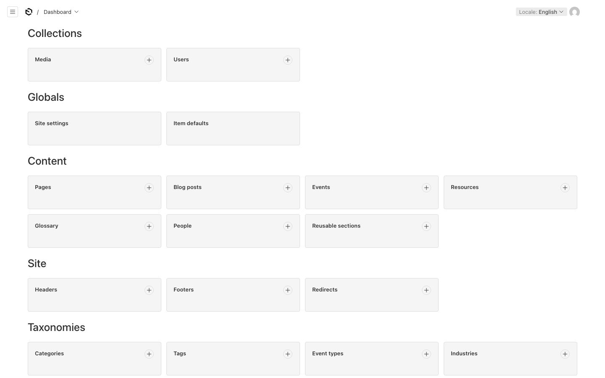
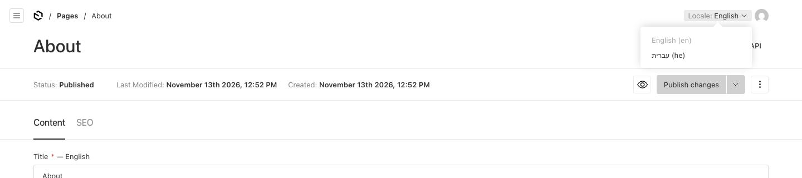
Create a page
- Go to Pages and click Create New.
- Pick a Template: Blank, Landing page, About, Contact or Archive. A template fills the page with starter sections when you first save; you change everything afterwards.
- Type the Title. The Slug (the URL part) fills itself from the title; change it if you want a shorter URL.
- To place the page under another one (like
/about/team), choose a Parent in the right sidebar. - Build the content in Sections (see the next part).
- Click Publish changes to put it live. Until then your work is saved as a draft automatically.
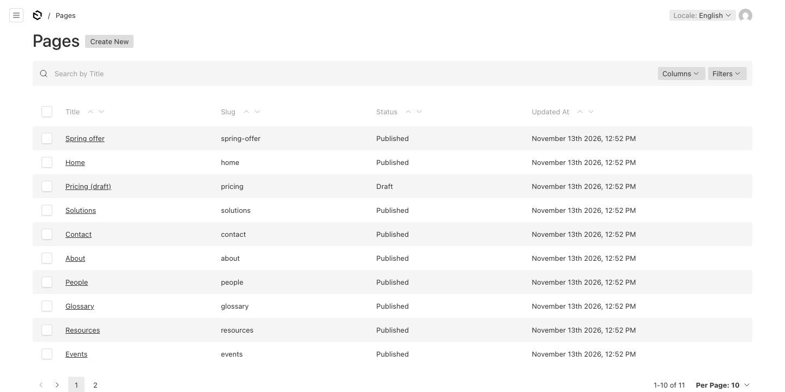
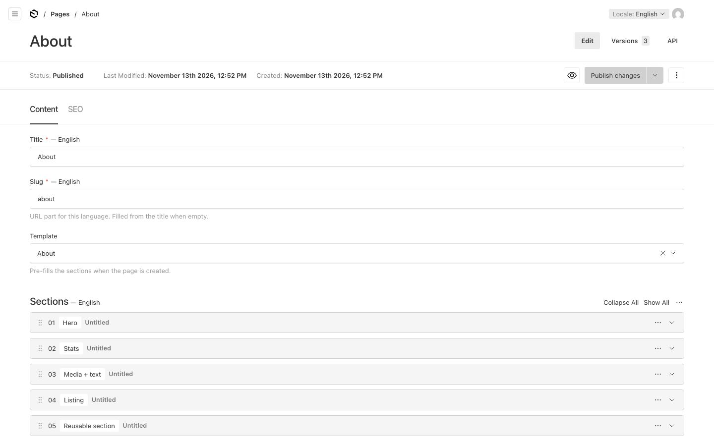
Start from an existing page instead
Open any page, click the ⋮ menu at the far right of the publish button and choose Duplicate. You get a copy with all its sections. Rename it, change the slug, then edit.
Make it the home page
Admins: open Site settings and choose the page under Home page.
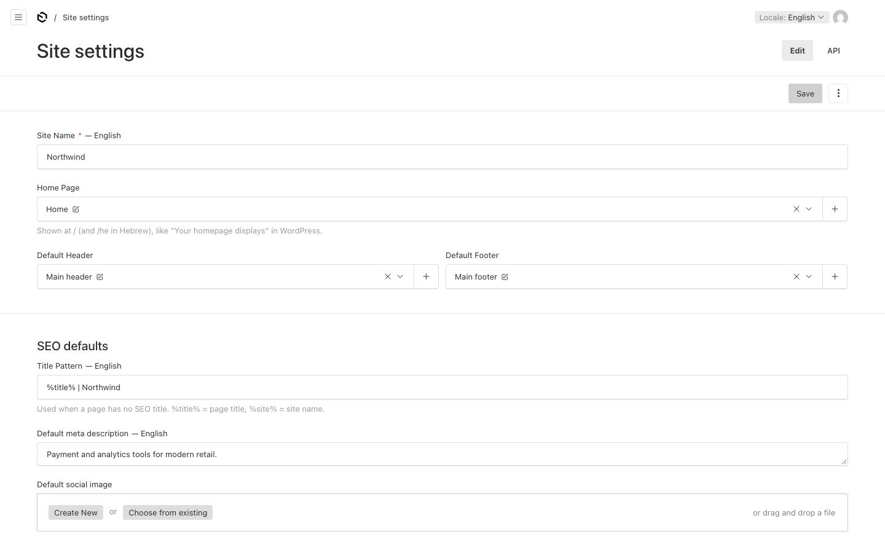
Working with sections
A page is a stack of sections (blocks). Click Add Section under the list and pick one:
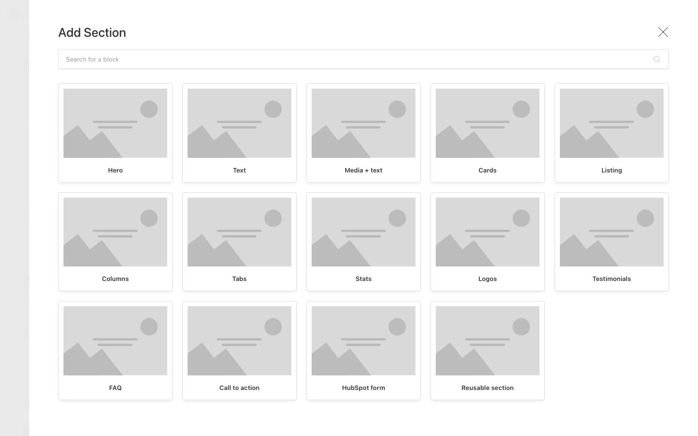
| Section | Use it for |
|---|---|
| Hero | Big headline at the top, with buttons and an image beside or below |
| Text | Formatted text: headings, lists, links |
| Media + text | An image next to text; choose which side the image goes |
| Cards | 2–4 columns of cards with image, title, text and link |
| Listing | An automatic list of posts, events, resources, glossary terms or people, with filters |
| Columns | Your own layout: 1–4 columns of text, images and buttons |
| Tabs, Stats, Logos, Testimonials, FAQ | What the names say; Logos can scroll as a marquee |
| Call to action | A short banner with a heading and buttons |
| HubSpot form | A form built in HubSpot: paste its form ID; show it on the page or in a popup |
| Reusable section | Insert a section from Reusable sections; edit it there once and every page updates |
Every section has three tabs:
- Content: the text, images and links.
- Style: background (default, light grey, brand tint, dark), spacing (none to large) and alignment (start or center).
- Visibility: rules for when the section shows (see Show or hide a section).
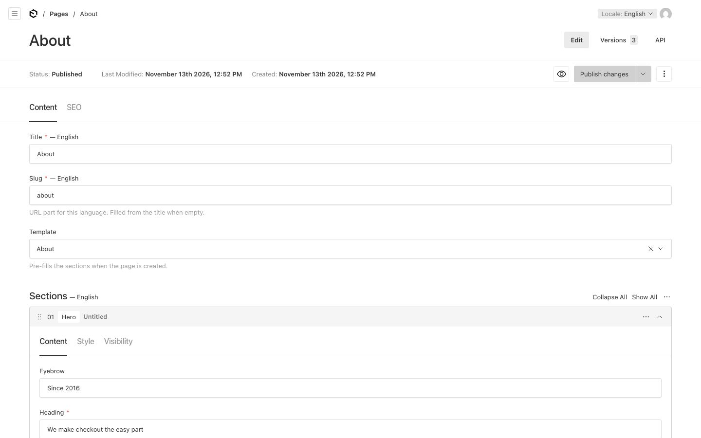
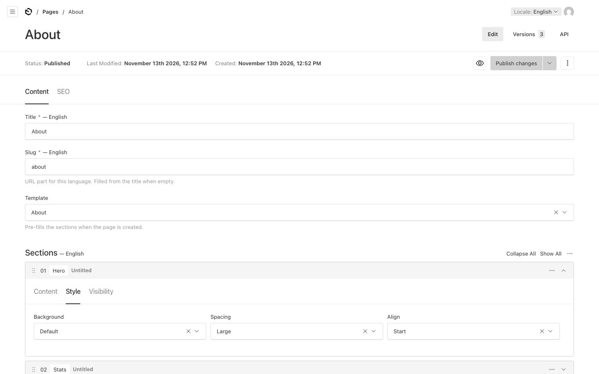
Move, copy and remove sections
- Reorder: drag a section by its handle on the left of its row.
- Collapse: click the arrow on the row to keep long pages tidy.
- Duplicate, remove, copy, paste: open the ⋯ menu on the section row. Copy Row on one page and Paste Row on another, or into the other language. Add Below inserts a new section right after it.
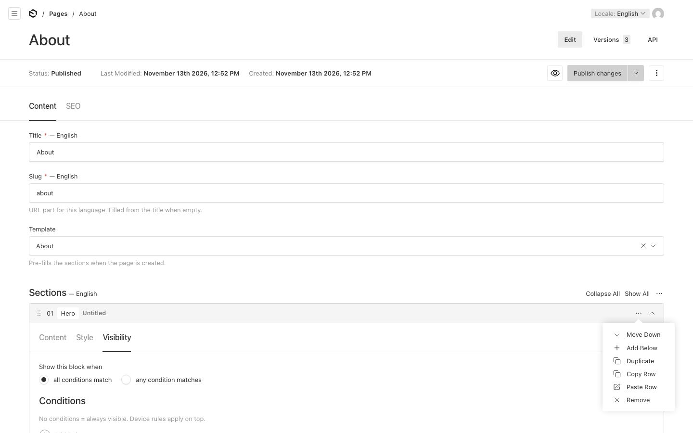
Buttons and links
For every button, choose Page or item and pick the target from the list, or Custom URL for anything else. Picked pages keep working if their URL changes later. Buttons also have an Appearance: primary, secondary, outline, ghost or link.
Blog posts and other content
Blog posts, Events, Resources, Glossary terms and People work the same way:
- Open the content type (for example Blog posts) and click Create New.
- Fill in the title, a short Excerpt (shown on cards and in Google) and the main content.
- In the sidebar, set the Featured image and pick terms: categories and tags for posts, event type for events, type, industries and topics for resources, department for people.
- Fill the type's own fields: author for posts; dates, location and speakers for events; job title for people.
- Optional: add Extra sections below the item, like on a page.
- Publish.
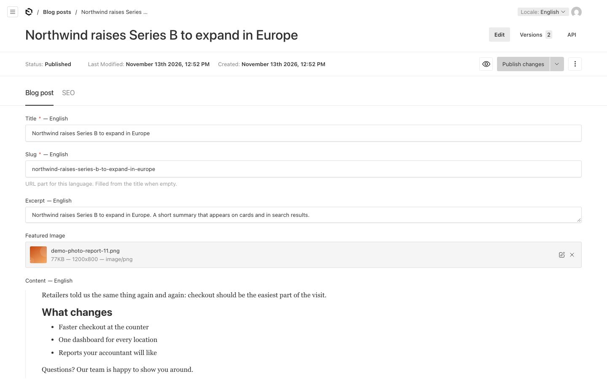
The item appears automatically in every list that shows its type: the blog page, sliders, related posts and the mega menu's "latest" column.
Categories, tags and other terms
Add or rename terms under Taxonomies. Categories can have a parent (for example Company › Culture). Each term has its own archive page, like /blog/category/news.
Related content
Opening a person shows the Blog posts and Events tabs with everything they wrote or speak at. You don't link them twice: set the author on the post, and it shows up on the person.
Edit, preview and publish
- Autosave: your changes are saved as a draft every couple of seconds. The live site doesn't change until you publish.
- Live preview: click the eye icon next to Publish changes. The website opens beside the form and refreshes as your draft saves. Switch between mobile, tablet and desktop sizes in its toolbar.
- Share a preview: at the bottom of the Content tab click Create preview link and send the link. Anyone with it can see the draft for 7 days, without logging in.
- Publish later: open the arrow next to Publish changes and choose Schedule Publish. You can also schedule an unpublish. The same menu has Publish in English to publish only the language you are editing.
- Undo a change: open Versions at the top right, open an older version to compare it with the current one, and click Restore.
- Unpublish: in the ⋮ menu choose Unpublish (all languages) or Unpublish in English (just this one).
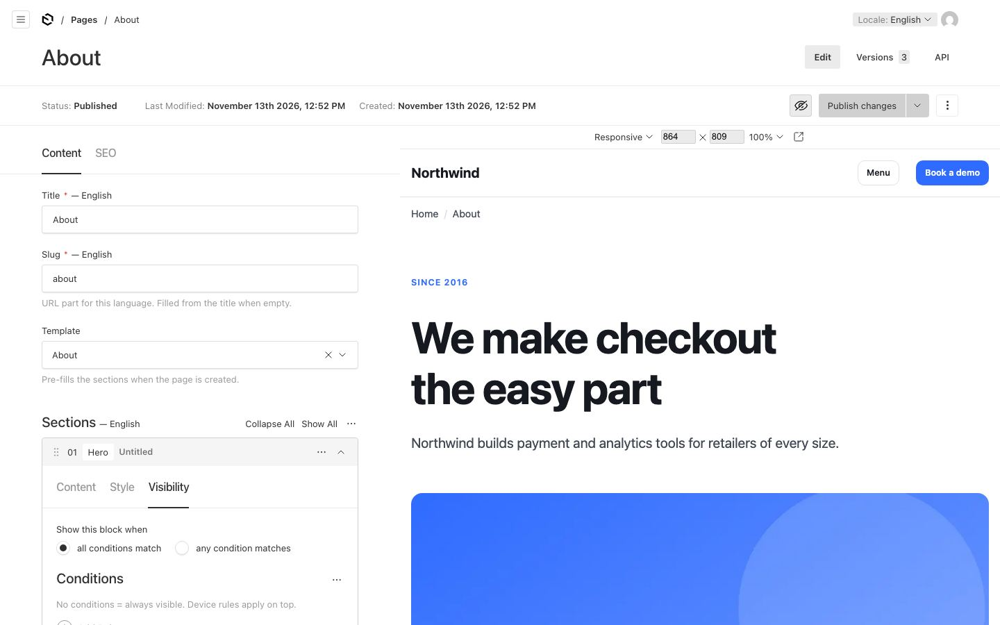
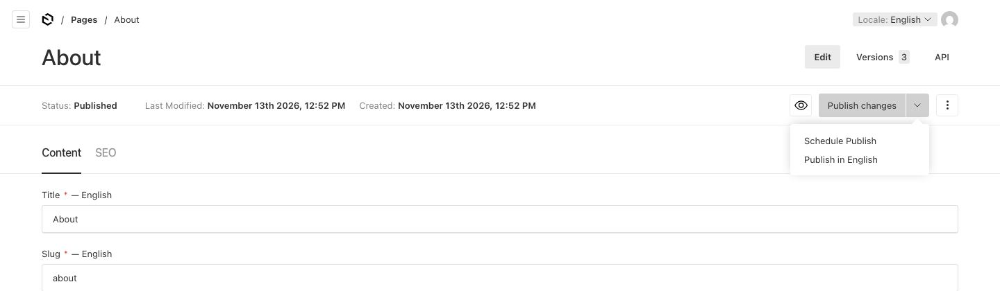
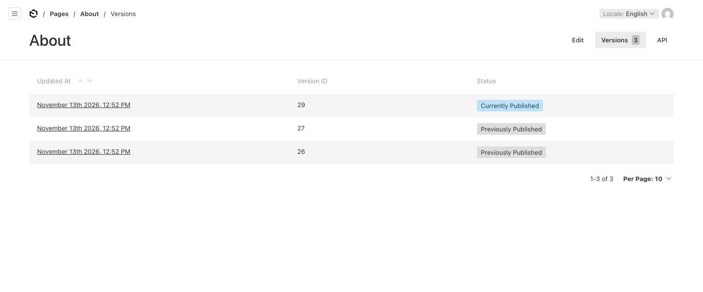
Add a translation
English is the main language and has no prefix in the URL (/about). Hebrew lives under /he (/he/אודות) and is shown right to left automatically. Each language has its own content, slug and publish status, so a page can be live in English and a draft, or missing, in Hebrew.
Translate a page or item
- Open the English page or item.
- Switch the language at the top to עברית. Empty fields mean there is no Hebrew version yet.
- To start from the English content, open the ⋮ menu and choose Copy to locale, from English to עברית. The English sections are copied in; translate the text and swap images where needed. To build a different Hebrew layout, skip this step and add sections yourself.
- Fill in the Hebrew Title and Slug. Hebrew letters are fine in the slug.
- Open the SEO tab and add the Hebrew meta title and description.
- Check it in Live Preview; the preview shows the Hebrew page right to left.
- Open the arrow next to Publish changes and choose Publish in עברית. The English version is not touched.
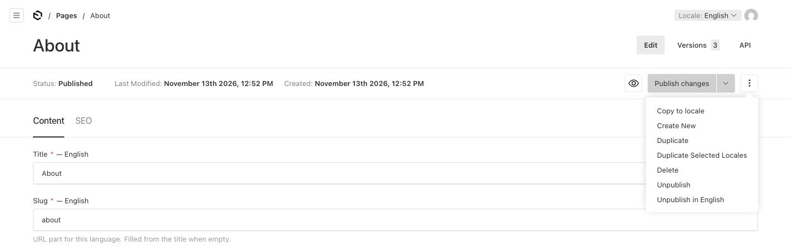
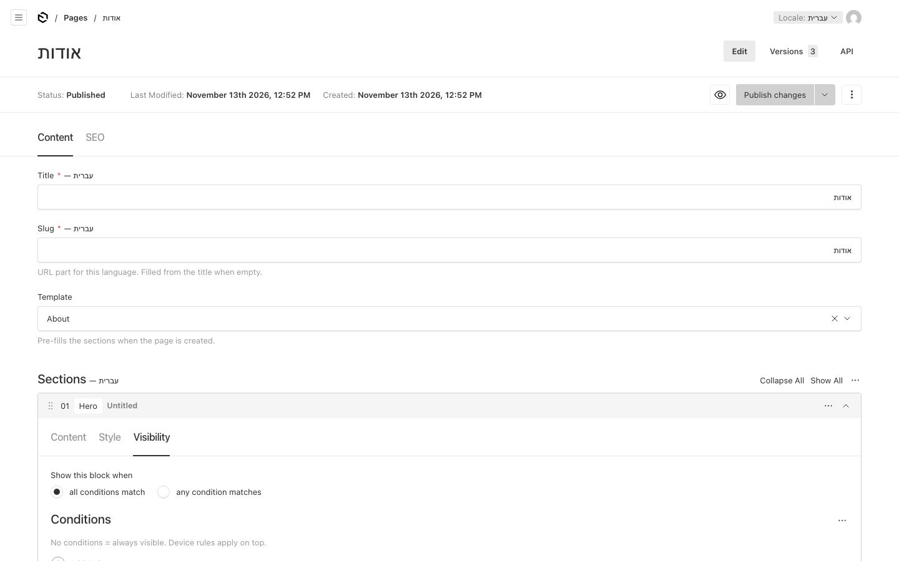
Everything else that has a Hebrew version
| What | Where | Notes |
|---|---|---|
| Terms | Taxonomies → term → עברית | Hebrew title and slug. Assigned terms are shared by both languages. |
| Menus | Site → Headers → עברית | The Hebrew menu is its own list, so it can have different items. Use Copy to locale to start from English. |
| Header button | Headers → Header button | Label and target per language. |
| Footer | Site → Footers → עברית | About text, columns and legal line. |
| Reusable sections | Content → Reusable sections | Translate them once; every Hebrew page using them updates. |
| Site name, title pattern | Site settings → עברית | Shown in browser tabs and Google. |
| URL bases | Site settings → URL bases | The first part of item URLs per language, e.g. blog / בלוג. |
See what is translated
In any list (for example Pages), switch the language at the top. The status column then shows the status for that language: published, draft, or changed since publishing.
Lists and sliders
Add a Listing section to show items automatically. Its settings:
- What to show: the content type; optionally only some terms; for events, upcoming or past only; "related to the current item" on item pages; items per page and the default order.
- Filters for visitors: add any of taxonomy (as tabs, dropdown or checkboxes), author or speaker, upcoming/past and dates, keyword search, A–Z letters, and sort. The filters go into the page URL, so a filtered list can be shared.
- Look: card style (standard, horizontal, compact, person, event, feature with image background), layout (grid of 2–4, list, slider) and paging (page numbers, "load more", none).
- Slider settings (when the layout is Slider): slides per view (1–4), arrows, dots, autoplay with seconds per slide, and full width. Full width with 1 slide per view gives tall edge-to-edge slides; with more it runs the row to the screen edge.
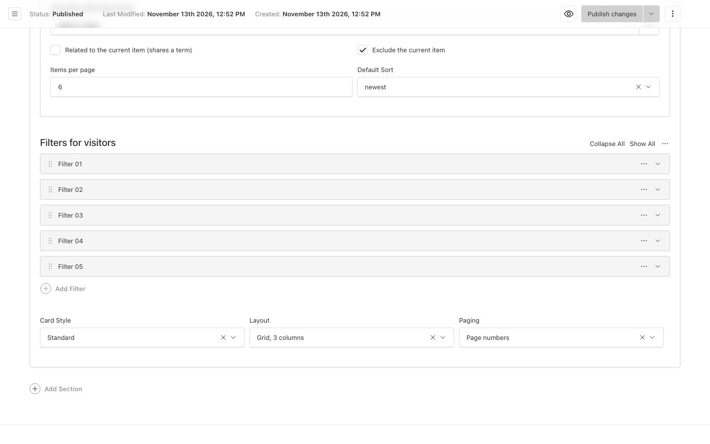
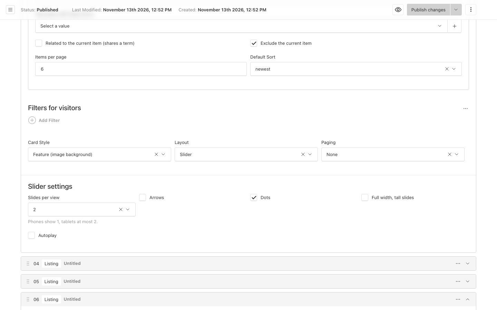
The CPT archive pages (Blog, Events, Resources, Glossary, People) are normal pages with a Listing section, so you can add anything above or below the list.
Show or hide a section
In a section's Visibility tab, add conditions. With no conditions, the section always shows. Choose whether all or any conditions must match.
| Condition | Example |
|---|---|
| Device | Show a section on desktop only. |
| Date window | Show a sale banner from 20 to 30 November. |
| Field of the current item | Show "Register" only while the event is still in the future. |
| URL parameter | Show a banner only for visitors from a campaign link, e.g. ?utm_campaign=bf. |
| Content type has items | Show "Upcoming events" only when there are upcoming events. |
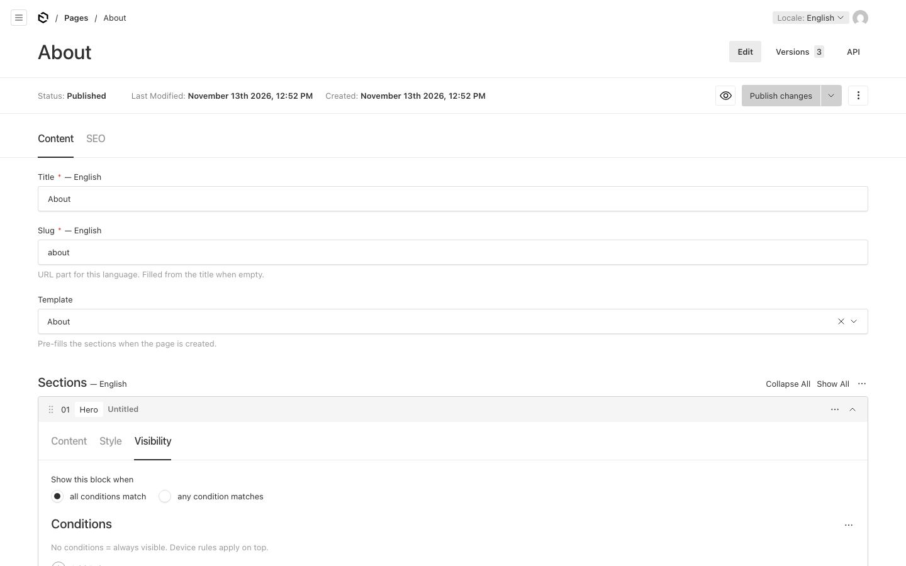
SEO and redirects
- SEO tab on every page, item and term: meta title and description with a Google preview and length hints (the magic-wand buttons fill them from the title and excerpt), a social sharing image, "Hide from search engines", and an optional canonical URL. Fill it per language.
- Defaults: when the SEO title is empty, the site uses the title pattern from Site settings, like
About | Northwind. - Changing a URL: when you change the slug of a published page or item, the old URL redirects to the new one automatically.
- Redirects (admins): add your own under Site → Redirects: the old path (e.g.
/old-pageor/he/…), the target page or URL, and permanent (301) or temporary (302). - The SEO tab sits next to Content at the top of the form.
- The sitemap (
/sitemap.xml) and the language links for Google update by themselves.
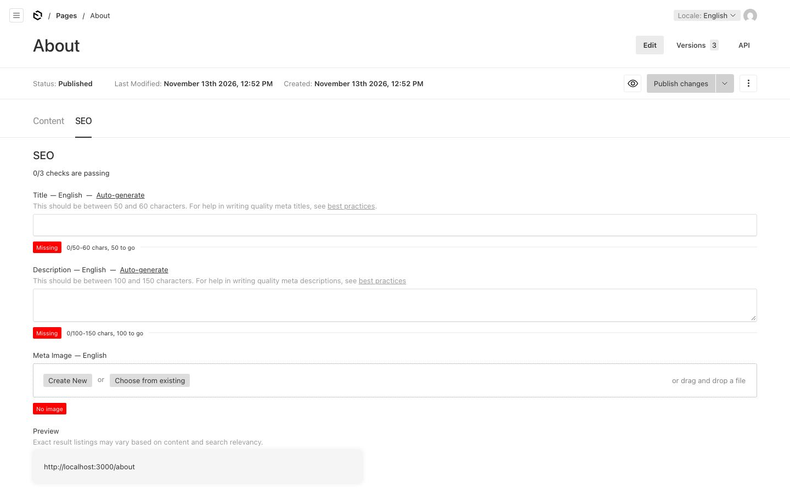
Images
- Upload in Media, or directly from any image field. Several files at once work too.
- Always fill in Alt: a short description for screen readers and Google.
- Large images are resized automatically for phones and desktops; you don't need to prepare sizes.
When to ask a developer
- A new kind of section, for example a new design from Figma that no existing section can build.
- A new field on a content type, a new content type or a new taxonomy.
- A new visibility condition (for example by country), a new filter type or a new card style.
- Anything in Site settings you don't have access to.
There are no plugins to install: features are added by the developers, which is also why updates don't break the site.